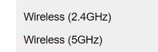

What can the App do?[top]
- Locate areas with good signal strength and data speed at your home/office using high resolution meters
- Check network speeds - Data[3G,4G or 5G] and Wifi[2.4, 5 or 6GHz]
- Check the latency or delay in network
- Download speeds, cell towers, wifi channel interference and much more
- Apps cannot boost your signal strength. It totally depends on :
- Obstructions from walls, buildings etc
- Distance from cell tower or router
- Phone hardware quality
- Operator/router transmission power
- So if you have low signal, it may still be possible that certain areas of your home may have usable signal. This app attempts to locate those areas
- If you are still unable to find a good signal, then you may need to either change your operator/router or else check if you have better signal with a different phone
- Another option is external hardware like cellular signal boosters, wifi mesh, wifi repeaters etc
WiFi - Low Signal and Speed[top]
-
Router placement

First use the Signal screen to check your Wifi Signal. Thereafter you can try and change the orientation of the router antenna and see if the signal improves. You can also try and increase the height of router. If its possible, relocate your router to provide optimum coverage all around your spaces, but this may not always be possible because your ISP cabling could be fixed
-
Transmission power
Adjust transmission power of router. For this you will need to login to your router and check if such an option is available. Most probably you will need to go through the router documents for achieving this
-
Wifi Channel band - 5GHz and 2.4GHz
5GHz bands are very fast but signal drops rapidly with distance. 2.5GHz bands are not as fast but perform better with distance and walls. This setting requires logging on to the router. Experiment with the channels and see if it has an improvement.
-
Other Options
If none of the above solve your issue you may need to explore options like Wifi repeaters, additional Wifi access points or Wifi mesh. Wifi mesh would be the costlier option but it would give you a single unified network with seamless handover between nodes.
Cellular 5G Issues[top]
5G is mostly rolling out in an incremental (NSA - Non stand alone) approach utilizing the existing 4G networks. In this hybrid approach the devices have dual connectivity to both 4G and 5G networks. 4G is primary and 5G is secondary network. When secondary is in range device is connected to both 4G and 5G simultaneously. However since this is rolling out stage number of 5G cells will be limited. So 5G connectivity may not be there all the time even though your network is NSA. This app may report 5G connectivity with network as LTE NSA. LTE NSA means 5G cells are not in range or not connected. The device may also be prefering 4G/LTE when Wifi is on. These readings may be at variance with device status bar which may have OEM specific readings. Please help to improve app by giving feedback on this issue.
Purchase Issues[top]
The most common issue few users face is when purchase is charged/completed but premium features are not unlocked. This is mainly because app depends upon play store app to refresh purchases which sometimes gets delayed. This can also happen after a device change or android update
Try these steps- If you can try and wait 24 to 48 hours for play store purchases refresh
- Click recents button and close all apps. Then open play store app once.
- Force stop play store app. Then open play store app once.
- Force refresh play store app. From Android Settings -> Apps -> Play store -> Clear cache. Then open play store app once.
- Use the same google account from which purchases have been made.
- Try reinstalling app. Then open play store app once.
- Try restarting device. Then open play store app once.
- Check network connection is available.
- Try on another device
- Have you got the purchase confirmation email from google? This is the important step to confirm the purchase has been actually charged.
- If the above steps are not giving result send me an email. I will check purchase status using your email id.
Widget issues - Things to try[top]
- Widgets freezing - Start and exit app
- Widgets freezing - Try restarting device
- Check if a red flag is appearing on app main screen. Click this red flag and resolve the issues.
- If app has been moved to sdcard please move it back to internal storage. Widgets will not work when app is installed in sdcard.
- Reinstall app
- There may be some utilities like battery savers, memory optimizers, task killers etc which may be interfering with the app. Try after temporarily disabling them.
- Try adjusting launcher grid. If possible keep it at default grid layout which mostly is 4x4
- Try with a different launcher
Android permissions[top]
Location permission. Cellular and wifi scan functions need this permission. Without this permission many parts of the app may not work correctly.
Android 10 and 11 Location Permissions. Widgets, statusbar notifications, log and alerts work in the background while the app is not in use. So the location permission needs to be granted "Allow all the time". These features will not work correctly if you give "while using the app" or "this time only" permission.
Phone permission. It is essential for gathering phone and network state. Most of the app will not work without this permission.
Location enable. For location permission to be useful location toggle is also to be enabled from the status bar.
[ * ] The app does not need location information however cellular/wifi scan info may possibly contain location info from the cell towers and Wifi routers. Hence Android requires location permissions/location enabling for using these functions.
Widget update rate[top]
Updating widgets too frequently is not recommended. Frequent updating doesn't allow device to sleep and this leads to battery drain. Also querying the telephony subsystem is resource intensive and may lead to system instability. So it is recommended to keep widget update rate at either manual mode or at 15 min interval.
Dual SIM Errors - Things to try[top]
- In Android settings app DO NOT keep default SIM for Voice call to "Ask every time". Choose a default SIM.
- Try setting both voice and data to same SIM in Android settings app.
- Some devices do not fully support the Android reporting standard for dual SIM, LTE etc.
- Consider contributing debug report from app menu.
Tech Notes[top]
Signal
- The Cellular and WiFi signal varies in orders of 1000s (The full range is actually more than a million times) which is difficult to appreciate and hence the unit called dBm is used which presents the data in a nice logarithmic manner
- WiFi -95dBm to -35dBm
- GSM -113dBm to -51dBm
- CDMA -100dBm to -75dBm
- EVDO -105dBm to -65dBm
- LTE -140dBm to -43dBm
- 5G -140dBm to -43dBm
Networks
- 2G - GPRS,EDGE,CDMA,IDEN
- 3G - HSPA,HSUPA,HSDPA,EHRPD,1XRTT,EVDO,UMTS,HSPA+
- 4G - LTE
- 5G - New generation radio NR
Technologies
- GSM - Global System for Mobile Communications. 2G GSM network
- CDMA - Code Division Multiple Access. 2G CDMA network
- EDGE - Enhanced Data GSM Environment. 2G GSM network
- HSPA - High Speed Packet Access. 3G GSM network
- HSUPA - High Speed Uplink Packet Access. 3G GSM network
- HSDPA - High Speed Downlink Packet Access. 3G GSM network
- EHRPD - Evolved High Rate Packet Data. 3G CDMA network
- 1xRTT - CDMA Data Mode. 3G CDMA network
- EVDO - Evolution Data Optimized. 3G CDMA network.
- UMTS - Universal Mobile Telecommunications System. 3G GSM network
- HSPA+ - Evolved HSPA. 3G GSM network
- LTE - Long Term Evolution. 4G network
- CDMA/EVDO Ec/Io - This is a measure of the quality of your CDMA/EVDO channel. This is more important than the corresponding CDMA/EVDO strength or RSSI channel
- LTE RSRP - Reference Signal Received Power. This is the main measurement in LTE channels and indicates the average strength of the reference signal
- LTE RSRQ - Reference Signal Received Quality. This indicates the quality of the LTE signal
- IWLAN - Mobile offloading. The carrier is using your WiFi to offload cellular functions
- LTE CA - LTE carrier aggregation
- LTE Pro - LTE advanced networks utilizing many concepts of 5G networks
- NR - 5G network. New Radio.
- NR NSA - NR Non stand alone. Hybrid of 4G and 5G network
- NR Advanced - NR with high speed milli metric wave networks
- Note - If you get good strength but poor quality then connection will also be poor. Conversely if you get poor strength but good quality then your connection is likely to still be good